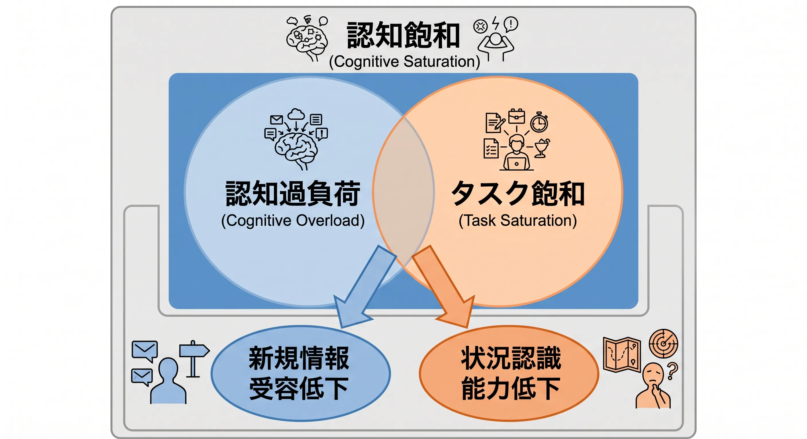
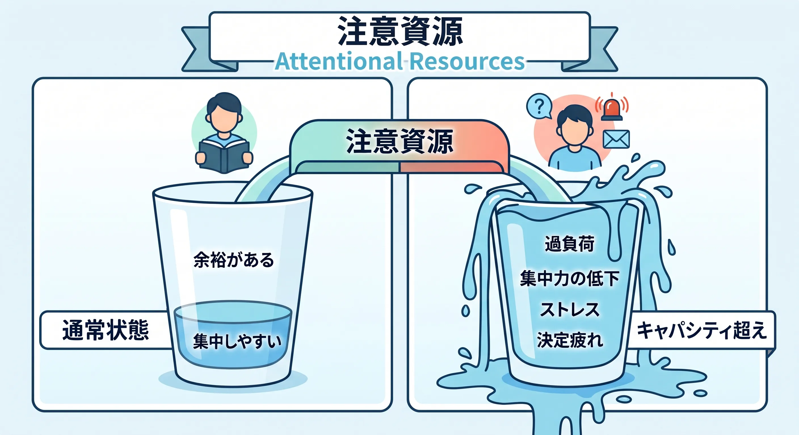
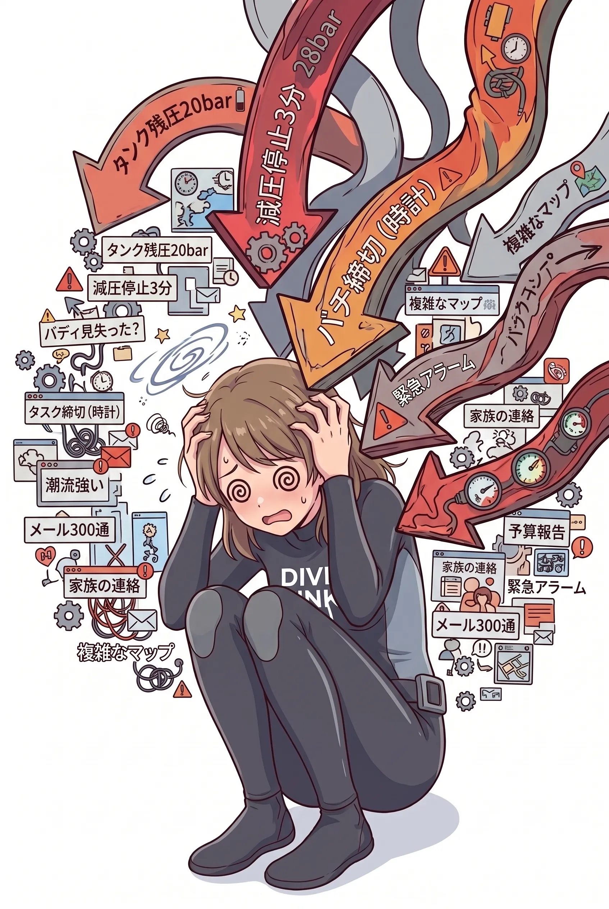
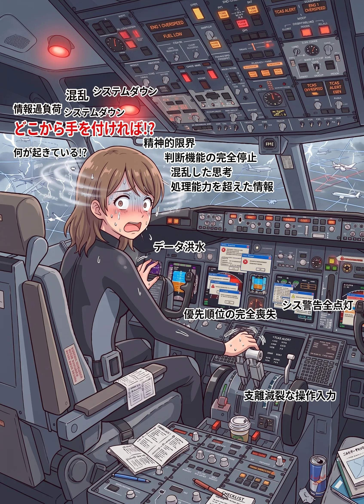
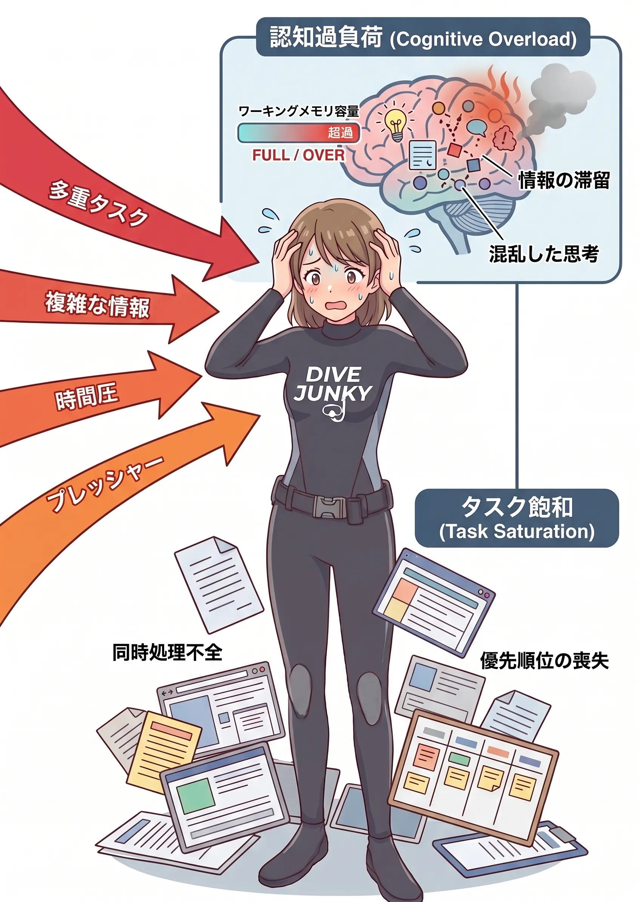
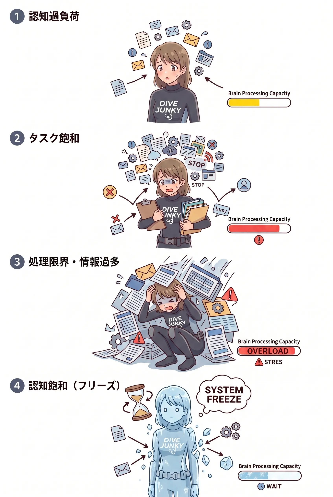
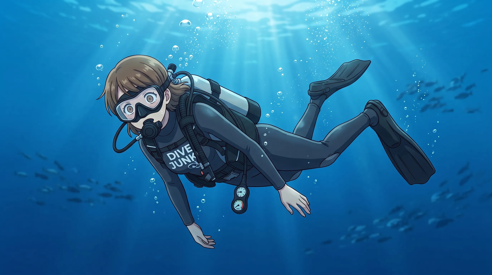

The road Orz passed by 2026 年 09 月
09 月 04 日 ( 金 )
Dive #210 認知飽和序説 Part 2 〜認知過負荷とタスク飽和そして認知飽和へ〜
1 なぜ認知飽和 (cognitive saturation) という言葉を使うのか

認知過負荷やタスク飽和、それに伴う注意の狭窄、状況認識の低下、判断能力の低下などについては、それぞれ研究され、多くの知見が蓄積されています。
一方で、筆者がここで扱いたいのは、それらのうち一つだけではありません。負荷が増大することで認知機能が次第に余裕を失い、新しい情報を取り込んで状況認識を更新し、適切な判断を続けることが困難になっていく一連の状態です。
本稿では、この一連の現象を説明するための便宜的な総称として 「認知飽和 (cognitive saturation)」 という言葉を使用します。
2 注意資源 (attentional resources) について

人間が一度に注意を向け、情報を保持し、判断し、処理できる能力には限界があります。認知心理学では、こうした人間の情報処理能力の限界を説明する考え方のひとつとして「注意資源 (attentional resources)」という概念があります。
また、その場で必要な情報を一時的に保持しながら処理する仕組みをワーキングメモリ (working memory) と呼びます。注意とワーキングメモリは密接に関係していますが、同じものではありません。
重要なのは、人間が利用できるこうした認知的な処理能力には限界があるということです。
3 認知過負荷 (cognitive overload) について

さきほど述べたように、人間の脳には一度に処理できる情報量に限界があります。
目の前にある情報が多い、情報そのものが複雑である、新しい情報が次々に入ってくる、短時間で判断しなければならない、強いストレスを受けている。こうした条件が重なり、処理を要求される情報量がその人が利用できる認知的な処理能力を上回ると、認知過負荷 (cognitive overload) と呼べる状態になります。
認知過負荷が始まったからといって、いきなり何も考えられなくなるわけではありません。
最初のうちは本人も一生懸命に処理しようとします。しかし処理能力には上限があります。負荷がさらに増えると、複数の情報を同時に保持することが難しくなり、注意を向けられる範囲が狭くなり、新しく入ってきた情報を取りこぼしたり、すでに持っている情報と結びつけられなくなったりします。
その結果、状況が変化しているにもかかわらず、自分の中にある状況認識を更新できなくなることがあります。
ダイビングで考えれば、残圧、深度、時間、現在位置、潮流、バディの位置、減圧情報、器材の状態など、本来なら一つひとつ確認しながら処理できる情報であっても、それらが短時間に一気に問題として押し寄せれば話は変わります。
個々には処理できる情報であっても、同時に処理しなければならなくなれば人間の処理能力を超えることがあります。
それが認知過負荷です。
4 タスク飽和について (task saturation)

認知過負荷と非常によく似た概念に、タスク飽和 (task saturation) があります。
航空分野などでは古くから問題にされてきた現象で、その人が処理し、実行しなければならないタスクの量や複雑さが、その人が利用できる能力を超えてしまった状態を指します。
重要なのは「難しい仕事をしている」という意味ではありません。
一つひとつは普段なら簡単にできる仕事でも、それを同時にいくつも行う必要が生じたり、途中で別の問題が割り込んできたり、しかも時間制限まで加わったりすれば、人間はすべてを処理できなくなります。
そのとき何が起きるのか。
処理の遅延、やるべきことの脱落、見落とし、一つの問題への固執、優先順位の混乱などが起こり始めます。
航空機の操縦席で警報が次々に発生している場面を想像すると分かりやすいかもしれません。
一つの警報なら対処できる。
しかし複数の警報がほぼ同時に発生し、それぞれに確認と操作が必要になり、その間にも航空機そのものを飛ばし続けなければならない。
そこで人間が処理できる限界を超えると、重要なタスクが遅れたり、抜け落ちたり、本来なら最優先すべきタスクよりも目の前の別のタスクに注意を奪われたりします。
もちろんダイビングでも同じことは起こり得ます。
潜っているというだけで、ダイバーはいくつものタスクを並行して処理しています。
そこへトラブルが一つ追加される。さらにもう一つ追加される。
それでも処理できているうちは問題ありません。
しかしどこかで、その人が同時に処理できる限界を超えることがあります。
5 認知過負荷とタスク飽和の関係

では認知過負荷とタスク飽和は何が違うのか。
実際には、この二つを完全に切り離して考えることは難しいようです。用語の使われ方にも重なる部分があります。
ここでは説明のために、認知過負荷を「情報を認知的に処理する側から見た過負荷」、タスク飽和を「処理し実行しなければならない仕事の側から見た飽和」と考えることにします。
ただし、これは厳密な境界線ではありません。
大量のタスクが発生すれば、それを処理するための認知負荷も増えます。
認知過負荷によって情報処理能力が低下すれば、それまで処理できていたタスクが処理できなくなり、未処理のタスクが増えていきます。
未処理のタスクが増えれば、さらに認知負荷が高まります。
つまり両者は互いに影響し合いながら、人をより余裕のない状態へ追い込んでいくことがあります。
そしてここで重要になるのが優先順位です。
人間にはすべてを同時に処理する能力はありません。そのため通常なら、重要なものから順番に処理したり、不要なものを後回しにしたり、場合によってはタスクそのものを捨てたりします。
ところが負荷がさらに高くなると、その「何を先に処理するか」を決める能力自体が低下することがあります。
優先順位を決めるためにも、認知資源が必要だからです。
こうなると、単純に仕事が忙しいという状態から、人間の思考や判断そのものが正常に機能しにくい状態へと移っていきます。
6 結果としての認知飽和 (cognitive saturation) について

ここまで説明してきた認知過負荷やタスク飽和がさらに進行すると、注意できる範囲が狭まり、新しい情報を受け入れにくくなり、状況認識を更新する能力が低下していきます。
さらに負荷が増えれば、複数の選択肢を思いつき、それを比較し、優先順位をつけ、適切な行動を選択することも困難になっていきます。
本稿では、こうして人間の認知機能が処理能力の限界に近づき、あるいは限界を超え、思考・判断能力が著しく低下した一連の状態を、便宜上「認知飽和」と呼んでいます。
ここで誤解してほしくないのですが、人間の脳が文字通り停止するという意味ではありません。
何らかの認知処理は続いています。
むしろ問題なのは、必要な情報を取り込み、状況全体を把握し、適切な選択肢を作り、それを比較して判断するという、その場で本当に必要な認知処理ができなくなることです。
一つの問題だけに固執することがあります。
重要な情報が目の前にあるのに、それを認識できないことがあります。
普段なら選ばないような解決策を、なぜかそのときだけ選んでしまうことがあります。
どうすればよいのか分からなくなり、誰かに判断を委ねようとすることもあるでしょう。
そして場合によっては、考えることも行動することもできず、その場でフリーズしたような状態になることもあります。
この図では、認知過負荷からタスク飽和、処理限界を経てフリーズへ至る形で描いていますが、これは人間が必ずこの四段階を順番に進むという意味ではありません。
実際の人間の反応はもっと複雑です。
負荷の種類、その人の経験、訓練、疲労、ストレス、環境などによって現れ方は変わります。
高度に訓練された人であれば、習熟によって一つひとつのタスクに必要な認知資源を減らすことができます。経験によって重要な情報を素早く選び出すこともできます。
しかし、それは認知資源が無限になるという意味ではありません。
インストラクターであっても、ガイドであっても、人間である以上その処理能力には限界があります。
だから「インストラクターなのだから、そんな判断をするはずがない」という考え方は危険なのだと思います。
問題は、その人がどれほど優秀なのかだけではありません。
その瞬間、その人にどれだけの認知負荷とタスクが集中していたのか。
そしてそれが、その人が利用できる認知資源の範囲に収まっていたのか。
そういう視点から人間の行動を見る必要があるのだと思います。
7 次回予告

次回からは、こうした認知過負荷やタスク飽和、そしてぼくが認知飽和と呼んでいる状態が、実際のダイビングの現場でどのように現れるのかを、いくつかの具体例を挙げながら考えていきたいと思います。
その一つは、荒れた海を前に、本来なら中止判断をする立場にいるインストラクターが、ゲストに「どうします？ 行きます？ やめます？」と問いかけてしまう場面です。
そしてもう一つは、1999 年 3 月 21 日、和歌山県串本町住崎でぼく自身が起こしてしまったインシデントです。
あの日、ぼくには知識がなかったわけではありません。
必要なスキルをまったく持っていなかったわけでもありません。
それなのに、なぜ考えられなくなったのか。
なぜ普段なら選択できたはずの行動を選べなくなったのか。
そのときぼくの中で何が起きていたのかを、ここまで説明してきた認知過負荷とタスク飽和という視点から、改めて考えてみたいと思います。
- category :
- #records of orz's road
- #ダイビング
- #スクーバダイビング
- #より安全なダイブを目指して
- #認知飽和
- #ダイバーの支え合い
- #ダイバーの成長
- #ダイバーの育成